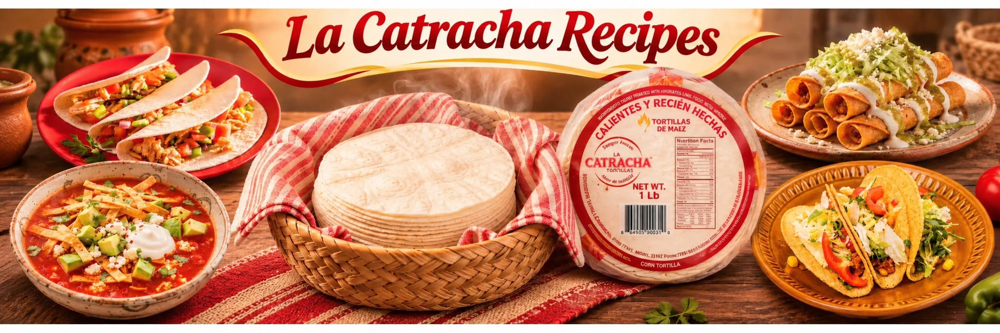
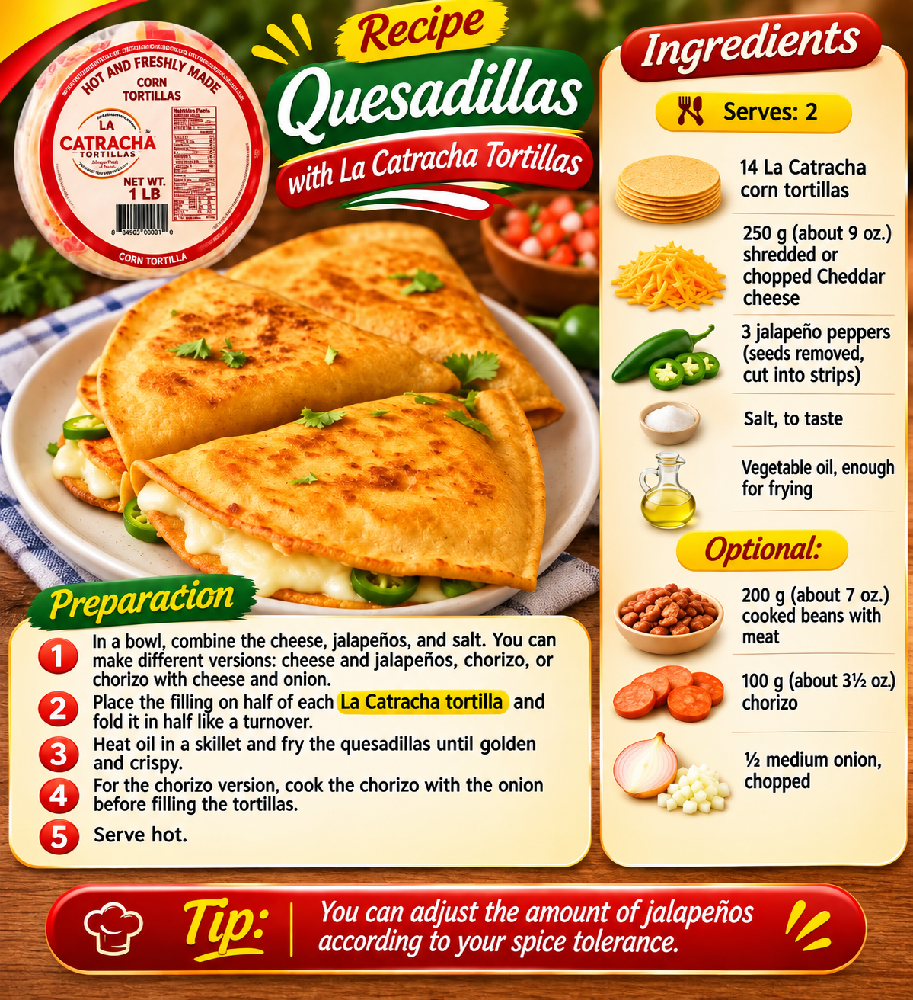
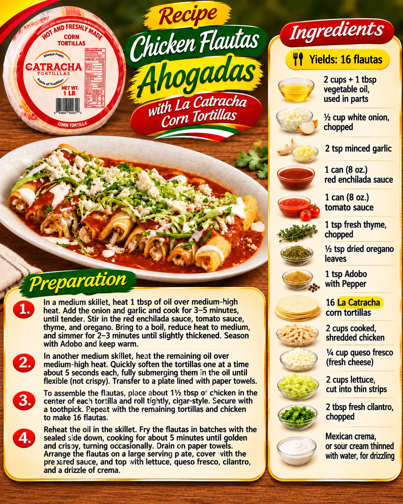
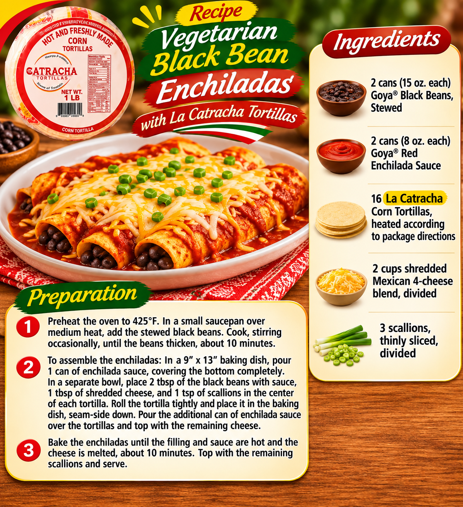
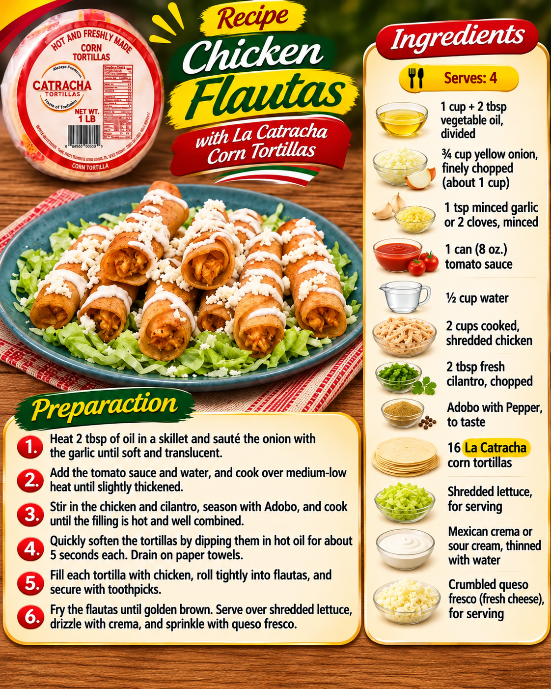
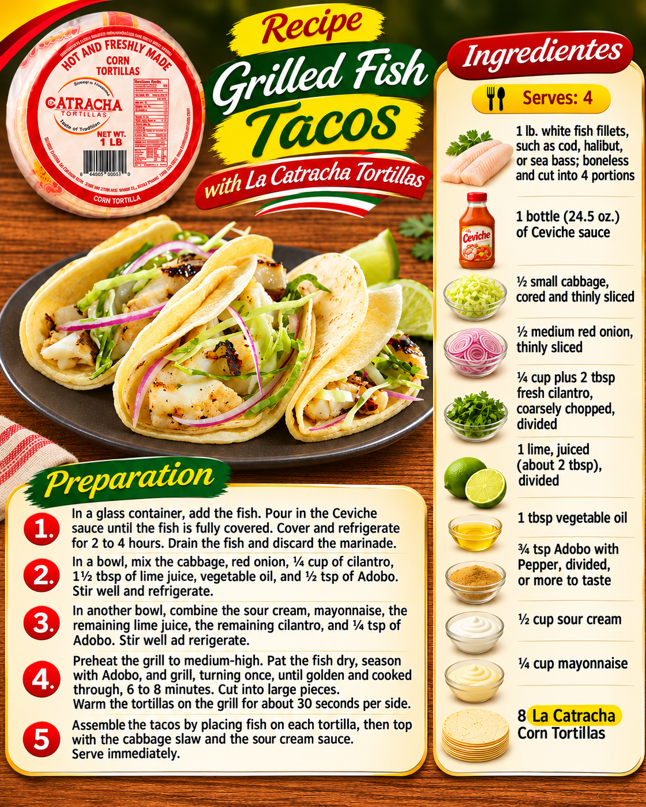
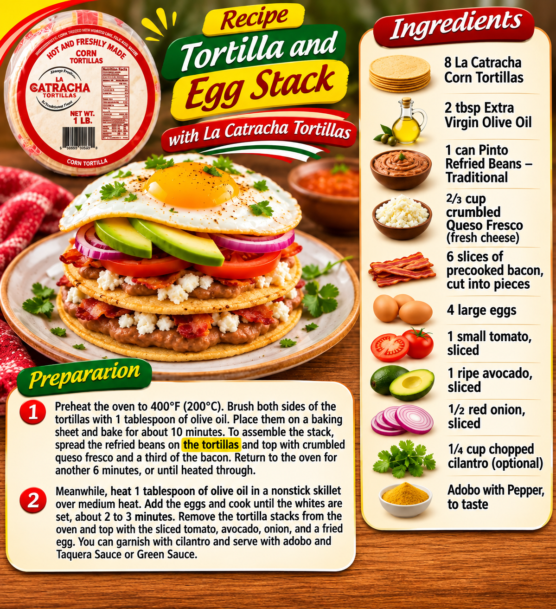
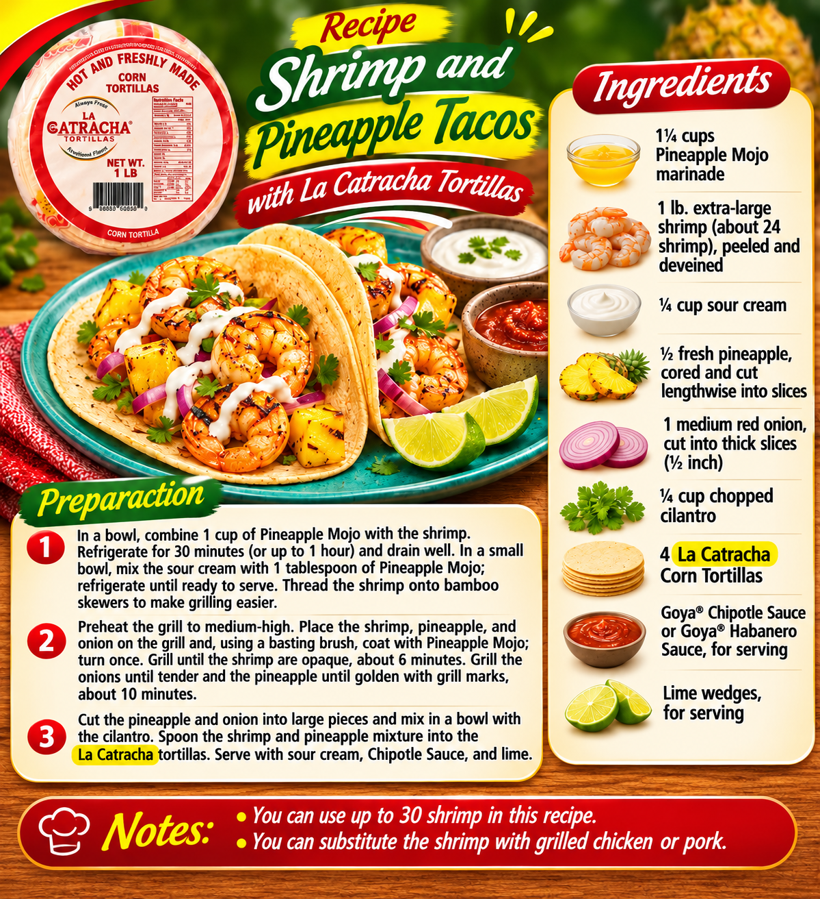
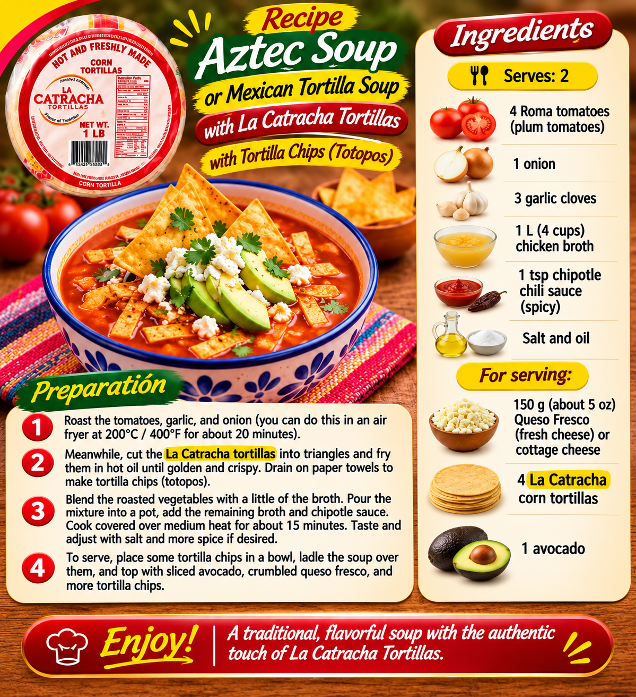

2501 NW 27TH AVE. MIAMI, FL. 33142
lacatrachatortillas@gmail.com

In every single dish, our La Catracha Corn Tortillas are the main ingredient bringing softness, strength, and authentic flavor. Hover to enlarge or click any recipe to view it in full size.

Enlarge recipeGolden and crispy outside, stuffed with melted Cheddar cheese and jalapeños, built around La Catracha Corn Tortillas as the star ingredient.

Enlarge recipeCrispy rolled flautas bathed in spiced red sauce with lettuce, queso fresco, and crema, made with La Catracha White Corn Tortillas.

Enlarge recipeBaked with seasoned black beans, red enchilada sauce, and 4-cheese blend using La Catracha Corn Tortillas as the central base.

Enlarge recipeSeasoned shredded chicken rolled into pliable La Catracha White Corn Tortillas, fried golden and topped with crema and queso fresco.

Enlarge recipeMarinated white fish fillets served on grill-warmed La Catracha Corn Tortillas with crisp cabbage, red onion, and lime crema.

Enlarge recipeCrispy baked layers of La Catracha Corn Tortillas stacked with refried beans, queso fresco, bacon, avocado, and a fried egg on top.

Enlarge recipeGrilled shrimp and pineapple glazed in pineapple mojo, wrapped in soft La Catracha Corn Tortillas with sour cream and chipotle salsa.

Enlarge recipeTraditional roasted tomato and chipotle broth topped with crunchy totopos made from La Catracha Corn Tortillas, avocado, and queso fresco.
2501 NW 27TH AVE. MIAMI, FL. 33142
.png)